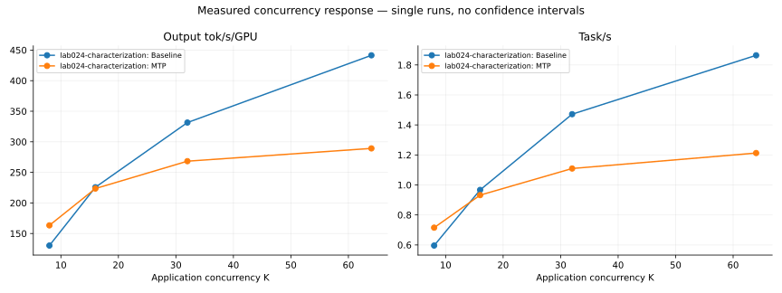

1. Runtime Performance Characterization
Task 시간 구성 · prefix cache · prefill/decode · 생성 처리량
Agentic AI Workload Characteristics의 Runtime / Tool / Agent 구성을 Graph RAG에 적용했습니다. 논문의 수치를 재사용한 차트가 아니라 실제 저장된 실험 결과의 재분석입니다.
Throughput은 공통 측정 창의 engine 카운터와 관측 GPU 수를 사용합니다. 아래 행동·시간 분포는 그 창 안에서 시작하고 끝난 task만 포함합니다. 느린 조건은 완료 표본이 적어 선택 편향이 큽니다. 실험별 단일 실행이며 조건 간 정확도 동등성은 검증되지 않았습니다. 이전 세션의 하드웨어·아티팩트 한계는 각 원본 보고서에 유지됩니다.
차트 수치·입력 SHA256 · 측정 정의 / 한계
PNG 다운로드Task 시간 구성 · prefix cache · prefill/decode · 생성 처리량
Graph 작업 종류 · 가장 느린 호출 · 오류율 · 실행 진행도별 활동
LLM 호출과 tool round · context 수요 · 종료 유형별 분포 · 턴별 context 증가